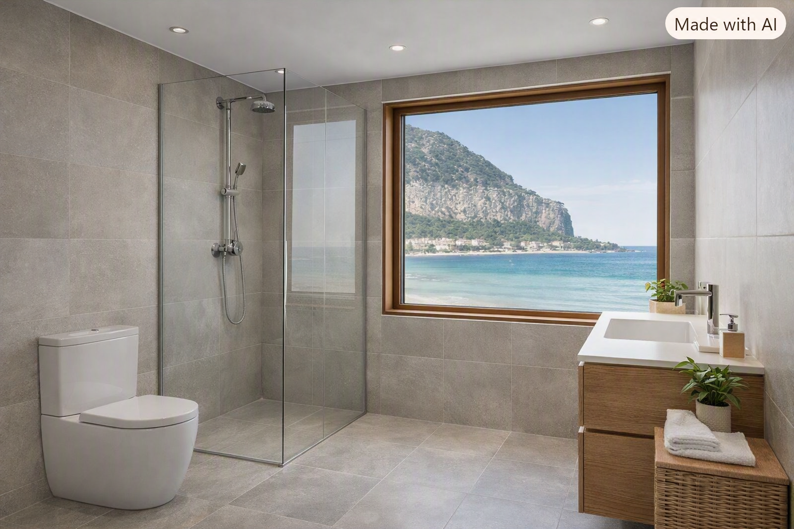
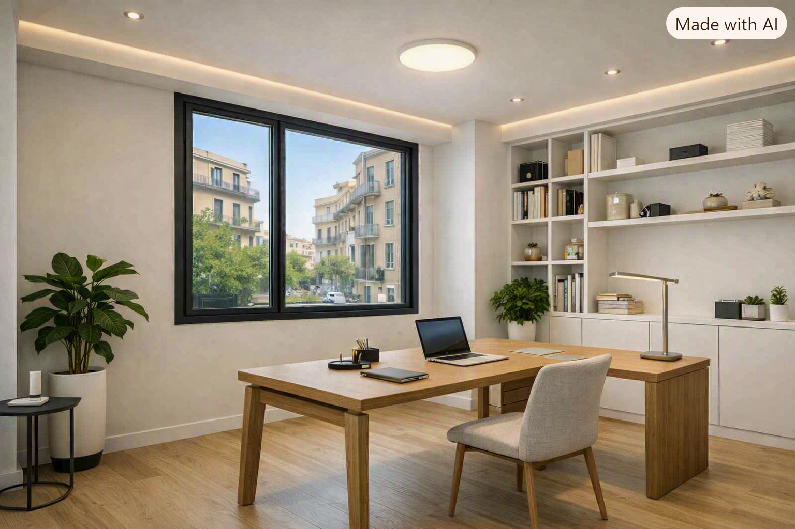

🏗️ Configura la Tua Ristrutturazione a Palermo
Seleziona l'ambito di intervento specialistico per analizzare capitolati tecnici e soluzioni ingegneristiche mirate alle peculiarità urbanistiche e strutturali del territorio palermitano:
🏠 Appartamenti
🛍️ Negozi e Locali
💼 Uffici e Studi
🚿 Bagni Express
Come Gestiamo la Soprintendenza e il Centro Storico di Palermo
Strategie ingegneristiche e prassi burocratiche per superare i vincoli paesaggistici e architettonici senza blocchi o sanzioni.
🛡️ Metodo Tempestivo: La Burocrazia del Centro Storico Sotto Controllo
Acquistare o ristrutturare un immobile nel cuore antico di Palermo rappresenta un investimento di straordinario valore ma, al contempo, un vero e proprio percorso a ostacoli a causa dei rigidi vincoli imposti dalla Soprintendenza per i Beni Culturali e Ambientali (BBCCAA). Molti proprietari e acquirenti temono lungaggini burocratiche infinite, rigetti delle istanze o, peggio, pesanti sanzioni penali e amministrative derivanti da interventi eseguiti in assenza o in difformità dei pareri paesaggistici obbligatori.
Con il nostro approccio da General Contractor, Tempestivo si fa carico dell'intero iter autorizzativo. Analizziamo preventivamente la stratigrafia storica dell'edificio, relazionandoci direttamente con gli enti competenti per convertire la complessità normativa in un cronoprogramma certo, sicuro e pienamente conforme alla legge.
🔍 Focus Tecnico: Immobili d'Epoca e Pareri Paesaggistici (Kalsa, Albergheria, Politeama)
Nei quartieri storici ad alta densità monumentale come la Kalsa, l'Albergheria o nelle aree di espansione ottocentesca come il Politeama, ogni dettaglio costruttivo (infissi, prospetti, materiali di finitura, tipologia di intonaci e distribuzioni interne) è sottoposto a tutela rigorosa. Ecco come Tempestivo azzera le sanzioni e gestisce l'iter critico:
1. Rilievi e Relazioni Storiche Preventive
Redigiamo relazioni storico-critiche dettagliate e rilievi plano-volumetrici millimetrici prima di depositare qualsiasi pratica al SUE o alla Soprintendenza, prevenendo richieste di integrazione e blocchi amministrativi.
2. Compatibilità dei Materiali e Finiture d'Epoca
Selezioniamo esclusivamente materiali autorizzati (come malte a base di calce naturale, infissi in legno certificati conformi al finto legno storico e tecniche di restauro conservativo) per evitare sanzioni per alterazione del decoro architettonico.
3. Interlocuzione Diretta e Monitoraggio Iter
Il nostro Project Manager segue costantemente lo stato di avanzamento dei pareri paesaggistici presso gli uffici competenti, azzerando i tempi morti e garantendo che ogni lavorazione in cantiere parta solo a titolo abilitativo rilasciato.
Stai valutando l'acquisto di una casa d'epoca a Palermo e vuoi evitare brutte sorprese burocratiche?
📞 Richiedi una Consulenza Tecnica per il Centro StoricoGuide Tecniche Palermo: Approfondimenti Urbanistici e Burocratici
Risorse specializzate per orientarsi tra i vincoli della Soprintendenza per i Beni Culturali e Ambientali (BBCCAA) e le procedure edilizie comunali senza intoppi.
🔑 Il Portale Completo per le Pratiche Edilizie e le Normative Urbanistiche a Palermo
Affrontare un intervento di ristrutturazione edilizia o di riqualificazione energetica nel capoluogo siciliano richiede una conoscenza approfondita del quadro normativo vigente e delle procedure amministrative locali. Le Guide Tecniche Palermo di Tempestivo nascono per offrire a proprietari di immobili, investitori e studi tecnici un supporto chiaro, aggiornato e semanticamente ottimizzato su ogni adempimento burocratico. Dalla gestione delle istanze presso lo Sportello Unico dell'Edilizia (SUE) del Comune di Palermo per il rilascio di CILA (Comunicazione Inizio Lavori Asseverata) e SCIA (Segnalazione Certificata Inizio Attività), fino alla complessa interlocuzione con la Soprintendenza per i Beni Culturali e Ambientali (BBCCAA) per gli immobili sottoposti a vincolo storico-artistico o paesaggistico nel Centro Storico (Kalsa, Albergheria, Capo, Politeama).
All'interno di questa sezione troverai utilità pratiche, checklist per la documentazione catastale, moduli di richiesta, e analisi dettagliate sulle normative urbanistiche (come il Piano Regolatore Generale e le tolleranze costruttive). Approfondiamo inoltre l'utilizzo strategico dei tool di pianificazione e le modalità di accesso alle detrazioni fiscali e bonus casa (Bonus Ristrutturazioni, Ecobonus, Bonus Barriere Architettoniche), curando direttamente la trasmissione telematica della documentazione obbligatoria all' ENEA e coordinando i rapporti con gli uffici tecnici comunali e catastali (Agenzia delle Entrate - Territorio).
Affidati alla nostra competenza di General Contractor per trasformare la burocrazia edilizia da ostacolo a percorso lineare e sicuro, garantendo la perfetta conformità urbanistica e la massima valorizzazione del tuo patrimonio immobiliare a Palermo.
🏛️ Vincoli Paesaggistici Soprintendenza BBCCAA
Guida pratica ai vincoli paesaggistici della Soprintendenza BBCCAA di Palermo per immobili storici, facciate d'epoca e interventi nel Centro Storico.
📄 Gestione CILA e SCIA allo Sportello Unico (SUE)
Come gestire la CILA e la SCIA allo Sportello Unico dell'Edilizia di Palermo: scadenze, documentazione necessaria e iter telematici accelerati.
🏆 I Nostri Cantieri Reali nei Quartieri di Palermo
Esplora gli interventi di ingegneria edile completati con successo tra Mondello, Zona Libertà, Politeama e il Centro Storico.
Ristrutturazione bagno con vista mare - Mondello
La Sfida: Mitigazione dei fenomeni di corrosione salina e umidità di risalita strutturale nelle residenze costiere di Mondello.
Soluzione Tempestivo: Applicazione di cicli di intonaci macroporosi deumidificanti, trattamenti protettivi impermeabili ad alta resistenza e posa di gres porcellanato anti-salsedine con protocollo express in 7 giorni.
Scopri il cantiere →
Bagno moderno ultimato - Mondello
La Sfida: Riorganizzazione funzionale di spazi di servizio ristretti in immobili ad alto sfruttamento turistico e stagionale.
Soluzione Tempestivo: Installazione di impianti idraulici a collettore centralizzato ispezionabile, sanitari filomuro salvaspazio e finiture di interior design validate in anteprima virtuale 3D.
Scopri il cantiere →
Locale commerciale ultimato - Zona Libertà
La Sfida: Restyling di spazi commerciali all'interno di stabili signorili anni '70 di viale Libertà, nel rispetto delle rigide prescrizioni condominiali su rumorosità e logistica di cantiere.
Soluzione Tempestivo: Programmazione delle lavorazioni gravose su fasce orarie dedicate, impiantistica elettrica calpestabile e controsoffitti fonoassorbenti per garantire l'apertura nei tempi previsti.
Scopri il cantiere →
Cantiere locale commerciale - Politeama
La Sfida: Adeguamento tecnologico e strutturale alle normative antincendio e igienico-sanitarie per esercizi commerciali nel cuore del Politeama.
Soluzione Tempestivo: Gestione iter autorizzativi presso lo Sportello Unico Edilizia (SUE), coordinamento delle pratiche comunali e realizzazione di impianti certificati chiavi in mano.
Scopri il cantiere →
Lavori in corso ufficio direzionale - Libertà
La Sfida: Riconversione impiantistica di ampi appartamenti signorili storici in moderni studi professionali e direzionali in zona Libertà.
Soluzione Tempestivo: Posa di nuove reti idro-termiche con canalizzazioni a scomparsa, cablaggi strutturati in fibra e salvaguardia meticolosa delle decorazioni e stucchi d'epoca originali.
Scopri il cantiere →
Ufficio moderno completato - Libertà
La Sfida: Trasformazione di una compartimentazione rigida anni '70 in moderni open-space luminosi ad alta efficienza energetica.
Soluzione Tempestivo: Demolizione controllata delle tramezzature non portanti, installazione di vetrate isolanti acustiche e rispetto millimetrico dei tempi di consegna contrattuali.
Scopri il cantiere →
Calcola la Stima Istantanea della Tua Ristrutturazione a Palermo
Segui il percorso parametrico in 3 step per calcolare una proiezione economica basata sui costi medi dei materiali edili e sbloccare la modellazione virtuale in realtà aumentata.
Case Study & ROI Reale: Ristrutturazione per B&B e Case Vacanza a Palermo
Analisi d'impatto economico e ottimizzazione dei ricavi turistici per investitori immobiliari.
Il mercato extralberghiero a Palermo (Kalsa, Politeama, Albergheria) offre tassi di occupazione medi annui superiori al 78%, ma la redditività dipende interamente dalla rapidità di esecuzione dei lavori. Un ritardo in cantiere durante la primavera significa perdere il picco delle prenotazioni estive, bruciando fino a 15.000€ - 25.000€ di fatturato lordo potenziale.
🏆 Caso Studio in Evidenza: Conversione Trilocale in Zona Kalsa
Intervento: Ristrutturazione integrale di un immobile d'epoca di 85 mq suddiviso in 3 suite indipendenti con bagno privato.
Risultato Tempestivo: Consegna rigorosamente anticipata di 10 giorni rispetto al cronoprogramma, che ha permesso al committente di intercettare le prime prenotazioni di aprile con un fatturato extra di 8.200€ nel primo mese di apertura.
Visore 3D Esclusivo: Vivi la Tua Casa Prima di Posare il Primo Mattone
Supera i limiti dei tradizionali rendering bidimensionali cartacei. Attraverso l'impiego di tecnologie avanzate di modellazione BIM e visori di realtà virtuale immersiva (VR), il nostro studio di interior design ti consente di percorrere digitalmente ogni ambiente del tuo immobile a Palermo, testando la resa cromatica dei materiali ceramici, l'interazione con l'illuminazione naturale e la distribuzione ergonomica degli arredi prima dell'apertura del cantiere edile. Un controllo totale che previene varianti in corso d'opera e azzera le criticità di cantiere.
Analisi ROI e Tempistica Blindata per B&B e Case Vacanza nel Centro Storico
Il mercato ricettivo nel centro storico di Palermo (Kalsa, Politeama, Albergheria, Capo) offre marginalità elevate, ma ogni giorno di ritardo in cantiere si traduce in una perdita secca di fatturato turistico. Il nostro box analitico e strategico è progettato specificamente per gli investitori immobiliari: garantiamo una tempistica blindata di cantiere e pianifichiamo gli interventi strutturali rispettando rigorosamente i mesi di fermo o di minore afflusso turistico. Proteggere i ricavi stagionali significa preservare il ritorno economico (ROI) dell'investimento, azzerando le brutte sorprese tipiche delle imprese generaliste non strutturate.
Ristrutturazioni a Palermo: Soluzioni Senza Stress per la Tua Casa o il Tuo B&B
Interventi di ingegneria civile e residenziale focalizzati sulla risoluzione dei problemi quotidiani del proprietario palermitano: dalla gestione complessa dei vincoli storici nel centro cittadino al rispetto tassativo dei tempi di consegna per appartamenti destinati a case vacanza e B&B turistici.
I nostri interventi mirati per ogni esigenza abitativa e ricettiva:
- Appartamenti e Case Vacanza / B&B: Riqualificazione globale chiavi in mano con consegna tassativa nei tempi concordati, fondamentale per non perdere le prenotazioni turistiche stagionali.
- Immobili nel Centro Storico: Interventi di risanamento strutturale e finiture d'epoca nel pieno rispetto delle autorizzazioni della Soprintendenza e dei vincoli storici di Palermo.
- Locali Commerciali e Negozi: Restyling rapido e coordinato per attività su strada, azzerando i giorni di chiusura forzata dell'esercizio pubblico.
- Uffici e Studi Professionali: Creazione di spazi di lavoro ergonomici, compartimentazioni acustiche e cablaggi tecnologici avanzati in edifici direzionali.
- Trasformazione Bagni Express: Sostituzione vasca con doccia e rifacimento impiantistico completo completato in tempi record di 5-7 giorni lavorativi.
Metriche di Successo e Affidabilità sul Territorio
Trasparenza sui Costi e Capitolati
Formula Chiavi in Mano
Dalla demolizione alla pulizia finale: pensiamo a tutto noi senza stress per il cliente.
Preventivazione Analitica
Capitolati chiari e dettagliati voce per voce, senza sorprese in corso d'opera.
Progetto & Visore 3D
Esplora il tuo futuro immobile in realtà virtuale prima di avviare i lavori edili.
Aggiornamento Dinamico Detrazioni Fiscali (Focus Bonus Casa)
Agevolazioni fiscali attive per la ristrutturazione a Palermo e gestione diretta delle pratiche burocratiche.
Ristrutturare casa o un locale commerciale a Palermo usufruendo delle agevolazioni statali richiede precisione documentale e conformità alle normative vigenti. La nostra impresa edile agisce come partner unico, sollevando il committente da ogni complessità burocratica: gestiamo direttamente la pratica ENEA e seguiamo l'iter per l'applicazione dello sconto in fattura o cessione del credito ove applicabile per legge.
| Tipologia Agevolazione | Aliquota / Detrazione | Interventi Ammessi a Palermo | Servizio Tempestivo Incluso |
|---|---|---|---|
| Bonus Ristrutturazioni Edilizie | Detrazione IRPEF | Manutenzione straordinaria, rifacimento impianti, restauro e risanamento conservativo. | Asseverazione tecnica, CILA/SCIA al SUE Palermo e visto di conformità. |
| Ecobonus & Risparmio Energetico | Detrazione dedicata | Sostituzione infissi, cappotto termico, installazione pompe di calore e caldaie ad alta efficienza. | Gestione diretta pratica ENEA obbligatoria e certificazioni energetiche (APE). |
| Bonus Barriere Architettoniche | Detrazione / Cessione* | Eliminazione ostacoli fisici, rampe, rifacimento bagni a norma e installazione ascensori/montascale. | Verifica requisiti normativi e applicazione sconto/cessione ove applicabile. |
📊 Tabella Dettagliata dei Costi Medi a Palermo per Lavorazione
Analisi analitica e trasparente dei prezzi medi di mercato applicati nel settore dell'edilizia residenziale e commerciale a Palermo, strutturata per supportare la pianificazione finanziaria e l'ottimizzazione del budget:
| Intervento / Lavorazione Edile | Costo Medio Indicativo a Palermo | Tempi Medi di Esecuzione | Note Tecniche & Specifiche |
|---|---|---|---|
| Rifacimento Bagno Completo (Chiavi in Mano) | Da € 3.800 a € 7.500 | 5 - 7 Giorni Lavorativi | Demolizione, rifacimento impianto idrico-sanitario, posa pavimenti/rivestimenti e installazione sanitari. |
| Posa Pavimenti e Rivestimenti | Da € 25 a € 55 al mq | 3 - 10 Giorni (secondo mq) | Inclusa preparazione del sottofondo, posa piastrelle/gres o parquet e stuccatura finale. |
| Rifacimento Impianto Idrico / Termico | Da € 45 a € 80 al mq | 5 - 12 Giorni | Sostituzione tubazioni, collettori, scarichi e rilascio di conformità a norma di legge. |
| Sostituzione Infissi e Serramenti (PVC / Alluminio) | Da € 220 a € 450 al mq | 2 - 4 Giorni | Serramenti ad alto isolamento termico e acustico, detraibili con bonus casa. |
| Rifacimento Impianto Elettrico Completo | Da € 40 a € 70 al mq | 5 - 10 Giorni | Tracce, corrugati, cablaggio, quadro elettrico modulare e rilascio di dichiarazione di conformità. |
| Ristrutturazione Appartamento Globale (Chiavi in Mano) | Da € 350 a € 650 al mq | 30 - 60 Giorni | Pacchetto completo: demolizioni, impianti, pavimenti, infissi, tinteggiatura e progetto 3D incluso. |
*I prezzi sopra indicati sono stime medie di mercato a Palermo e Provincia. Ogni preventivo Tempestivo viene personalizzato analiticamente dopo il sopralluogo tecnico gratuito.
Schema d'Intervento a Palermo
Il protocollo operativo ingegneristico certificato fase per fase.
Fase 1
Sopralluogo tecnico, rilievo misure e sviluppo del progetto con anteprima in visore 3D.
Fase 2
Definizione del capitolato, pratiche edilizie e apertura cantieri express.
Fase 3
Realizzazione opere, collaudo finale, pulizia e rilascio certificazioni a norma.
Recensioni Verificate e Testimonianze a Palermo
La trasparenza dei nostri cantieri certificata direttamente dall'esperienza sul campo dei nostri clienti:
⭐ Hai usufruito dei nostri servizi di ristrutturazione chiavi in mano a Palermo?
La tua opinione è fondamentale per consolidare la qualità dei nostri cantieri e aiutare altri proprietari di casa o attività commerciali nel capoluogo siciliano a scegliere con fiducia. Condividi la tua esperienza sulla nostra scheda ufficiale!
Lascia una Recensione su Google Business ProfileProject Manager Dedicato, Burocrazia Zero
Ogni cantiere di ristrutturazione gestito da Tempestivo a Palermo viene affidato a un Project Manager qualificato che coordina operai specializzati, forniture e tempistiche esecutive.
- Cronoprogramma Rigoroso: Rispetto assoluto della data di consegna contrattuale.
- Burocrazia e Pratiche: Gestione integrale di titoli abilitativi, CILA/SCIA e detrazioni fiscali / bonus casa.
- Garanzia e Polizze: Copertura assicurativa completa e totale tranquillità per tutta la durata dei lavori.
Galleria Visiva: Prima e Dopo i Cantieri a Palermo
Trascina lo slider o esplora le immagini affiancate per scoprire la trasformazione reale dei nostri cantieri tra Mondello, Libertà e Politeama.
🚿 Ristrutturazione Bagno Vista Mare - Mondello

Intervento: Risanamento da salsedine, impermeabilizzazione e posa gres con formula express in 7 giorni.
🛍️ Locale Commerciale / Studio - Libertà

Intervento: Restyling architettonico accelerato, impianti certificati e layout commerciale per negozi.